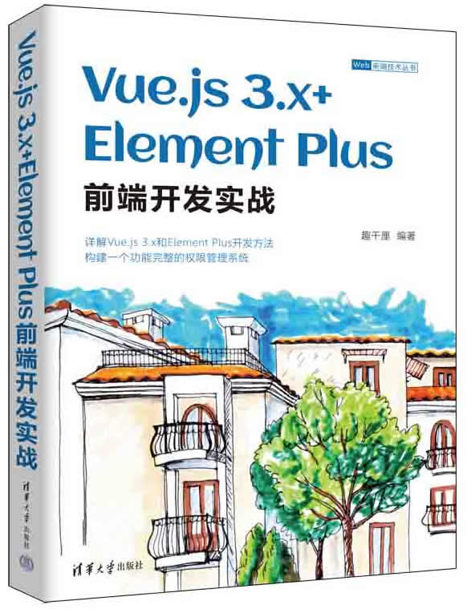

首页 > 书籍下载
《Vue.js 3.x+Element Plus前端开发实战》PDF下载（高清完整版）
|  | 作者：趣千厘 |
| 出版时间：2022年10月01日 | |
| 出版社： 清华大学出版社 | |
| ISBN：9787302618430 | |
| 总页数：390 | |
| 总字数：67.4W |
这本书是由一位资深的 Web 前端开发工程师编写的。内容详细，浅显易懂，适合初学者、Web 开发人员、UI 设计师和产品经理，也可以作为培训机构和高校相关专业的教材。
这里提供的是《Vue.js 3.x+Element Plus前端开发实战》的高清 PDF 下载，内容完整，附带目录标签。
这本书对当下前端主流框架 Vue.js 的相关知识做了详细的介绍，各章节还配有简单的示例，让读者可以快速掌握相关的知识。
作为一名正在从事 Web 前端开发工作的程序员，在这里给初学者一点小小的建议，我们在学习的过程中，可以边看书边编写代码，记得我的导师曾经说过：你编写的代码累计的越多，你的基础知识就越扎实。
这本书也得到了广大读者的好评，其中有一位读者是这样评价的：
看了很多相关的书籍，这本真的是太好了，手把手的教，详细，明了，由浅入深。
书籍目录
- 第1章 搭建Vue+Element Plus开发环境
- 1.1 简单认识Vue
- 1.2 简单认识Element与Element Plus
- 1.3 Vue+Element组合开发的优势
- 1.4 搭建Vue 3.x开发环境
- 1.5 在Vue中引入Element开发环境
- 1.6 安装一款顺手的开发工具 VScode
- 1.7 第一个完整版的Vue+Element Plus示例
- 第2章 Vue快速入门
- 2.1 双向数据绑定
- 2.2 插值
- 2.3 常用的指令
- 2.4 组件
- 第3章 Vue Router路由管理器
- 3.1 Vue Router的实现原理
- 3.2 Vue Router的使用方式
- 3.3 使用路由模块来实现页面跳转的几种方式
- 3.4 Vue Router的参数传递
- 3.5 单页面多路由区域的操作
- 3.6 Vue Router配置子路由
- 3.7 设置404页面
- 第4章 Vuex全局状态管理模式
- 4.1 不使用 Vuex 与使用 Vuex 的对比
- 4.2 安装和使用Vuex
- 4.3 state
- 4.4 getters
- 4.5 mutations
- 4.6 actions
- 4.7 modules
- 4.8 mapState、mapGetters、mapMutations和mapActions
- 第5章 Vue+Element实现列表和分页
- 5.1 Table组件
- 5.2 Pagination 组件
- 5.3 实战：数据的列表和分页
- 第6章 Element的Form表单和Select组件
- 6.1 Form表单组件
- 6.2 Select组件
- 6.3 实战：一个注册和登录页面
- 第7章 Element的Dialog组件、Message组件和MessageBox组件
- 7.1 Dialog组件
- 7.2 MessageBox组件和$alert、$confirm、$prompt
- 7.3 Message组件和$message
- 7.4 实战：一个列表的增、删、改、查功能
- 第8章 搭建项目基础框架
- 8.1 项目的说明和用到的技术
- 8.2 搭建开发环境
- 第9章 初始化页面布局
- 9.1 原生样式重置
- 9.2 初始化页面布局
- 9.3 头部组件的封装
- 9.4 登录页面和404页面的实现
- 9.5 左侧导航栏封装
- 第10章 实现各模块分页表格展示
- 10.1 通用分页表格组件的封装
- 10.2 各模块入口页面的实现
- 第11章 添加和编辑功能的实现
- 11.1 系统管理
- 11.2 应用管理
- 第12章 删除和其他操作的实现
- 12.1 删除操作
- 12.2 绑定资源操作
- 第13章 个人中心功能的实现
- 13.1 个人中心布局
- 13.2 基本资料
- 13.3 修改密码
- 13.4 系统消息
- 第14章 GitHub部署项目
- 14.1 认识 GitHub
- 14.2 部署项目
书籍下载
一键登录，免费下载完整版 PDF，文件名称：《Vue.js 3.x+Element Plus前端开发实战》.pdf